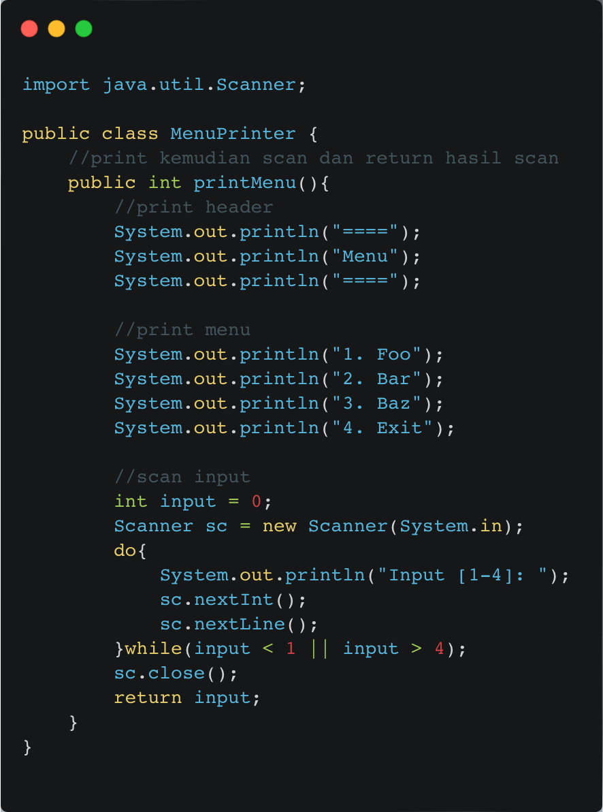
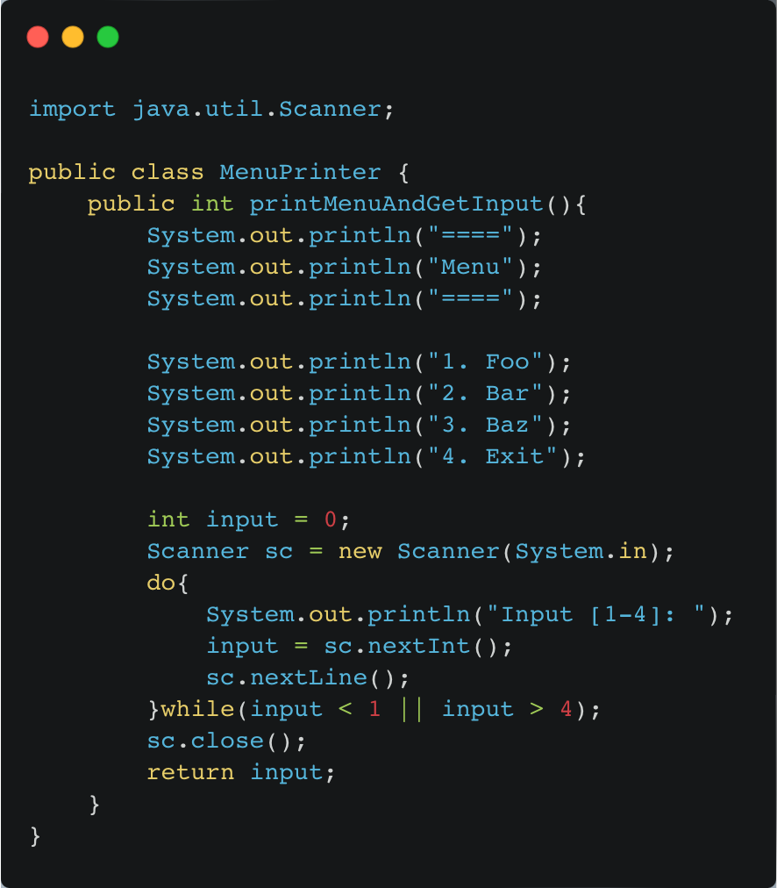

The Dispensable
Comments
–– Penjelasan Smell
Komentar pada kode biasanya dibuat dengan tujuan baik, yaitu ketika programmer menyadari kodenya tidak intuitif atau jelas. Namun, Jika kamu merasa suatu bagian kode tidak dapat dipahami tanpa komentar, coba ubah struktur kodenya agar lebih mudah dimengerti sehingga komentar tidak diperlukan. Nama method atau atribut haruslah sudah self-explain tanpa harus diberi komentar. Begitu juga logic flow ldi dalam fungsi. Bila logic flow perlu dijelaskan, dapat dipertimbangkan code tersebut sebagai bagian dari smell Long Method dan perlu di-extract.
–– Penyelesaian
Pada contoh MenuPrinter.java, terdapat banyak komentar yang sebenarnya tidak diperlukan karena karena sudah terlihat jelas dari kode. Masalah yang lebih serius terletak pada inkonsistensi antara komentar yang menyatakan bahwa fungsi ini melakukan "print kemudian scan" dan nama fungsi yang hanya menyiratkan tindakan mencetak menu (printMenu). Ini menciptakan inkonsistensi antara apa yang diharapkan oleh komentar dan apa yang diberikan oleh fungsi itu sendiri, yang dapat membingungkan atau menyesatkan programmer lain.
Sehingga perlu dilakukan extract method pada bagian-bagian di dalam fungsi, dan dilakukan rename method pada fungsi printMenu menjadi printMenuAndGetInput.
Kode setelah direfactor:
